Godot 4.7 editor plugin · tutorial
Substance Bridge
Pick a mesh and a material graph, set its parameters in the Inspector, and get a baked, mesh-fitted StandardMaterial3D built and applied without leaving the Godot editor.
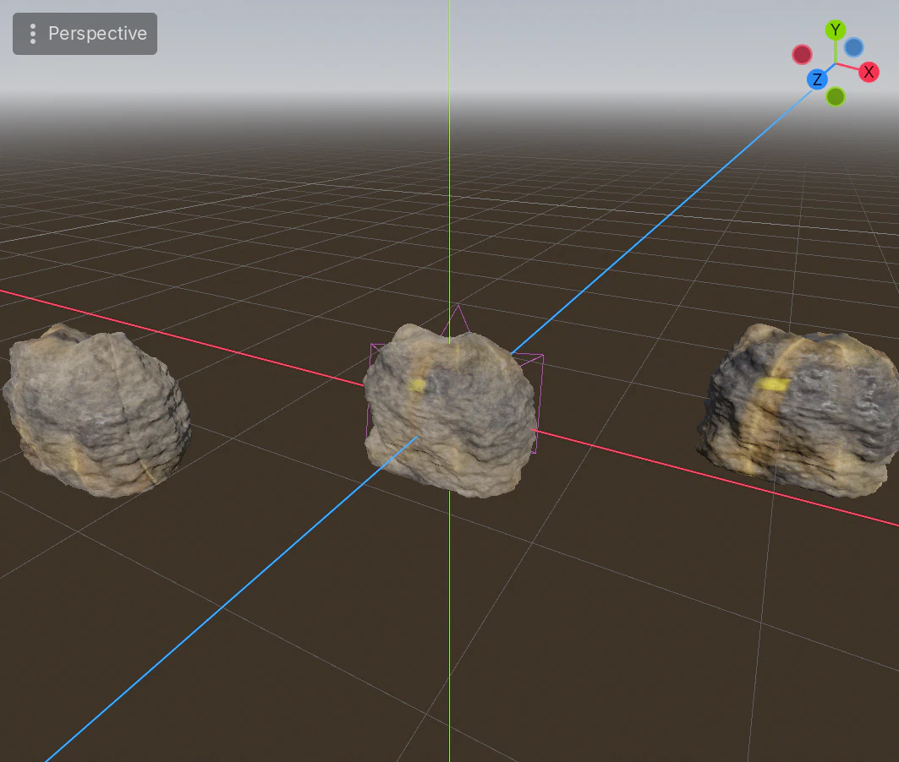
.sbsar, one per rock, made with a single click.Overview
Substance Bridge drives Adobe's Substance command-line tools from inside the editor and turns their output into Godot materials. A second, native backend runs the noise lab's Godot rebuilds of Substance noises through the same workflow.
Generated Inspector
Sliders, colours, toggles, dropdowns, groups, visibility rules and presets, read from the .sbsar itself.
Live previews
A 512 px preview re-renders about 2 s after you stop changing a value. Render the final size when you're happy.
Mesh-fitted materials
Mesh-adaptive graphs get AO, curvature, position and world normal baked from the selected mesh.
Variants and batch
Many seeds from one graph, one per mesh; re-render every material at any size.
Native baker
Bake mesh maps inside Godot, with no Substance tools, close to sbsbaker's results.
Tiling and projection
Repeat textures on the material, or bake planar, triplanar, cylindrical or spherical projections into any UV layout.
Substance library
Browse your .sbsar folders as sphere thumbnails, with an orbitable preview and each graph's inputs, parameters and outputs.
Noise Lab backend
Grunge Maps and standalone noises rebuilt in Godot, with the same Inspector and previews.
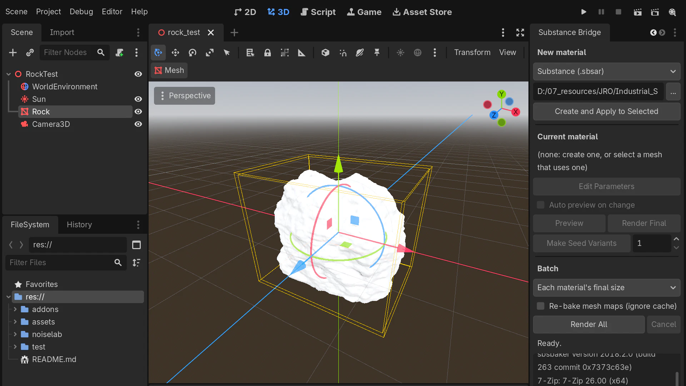
Setup
1. Tools
The plugin calls three external programs. Their paths are editor settings (Editor > Editor Settings > Substance Bridge); the defaults match a standard install:
| Tool | Used for | Default path |
|---|---|---|
sbsrender | Rendering .sbsar files | C:/Program Files/Allegorithmic/Substance Designer/sbsrender.exe |
sbsbaker | Baking mesh maps (unless you use the native baker) | C:/Program Files/Allegorithmic/Substance Automation Toolkit/sbsbaker.exe |
| 7-Zip | Reading the parameter metadata inside .sbsar files | C:/Program Files/7-Zip/7z.exe |
sbsbaker doesn't ship with Designer; it comes with the Substance Automation Toolkit. Version 2018.2 is the last one available without an enterprise licence, and it's the one this plugin was validated with. It reads FBX and OBJ, not glTF, so the plugin bakes from an OBJ it writes from the Godot mesh.
2. Enable the plugin
Copy addons/substance_bridge into your project and tick Substance Bridge in Project > Project Settings > Plugins. On start-up it checks the three paths and asks each tool for its version. Missing tools show in the dock's status line, and the versions it found are listed in the dock's log.
3. Noise Lab (optional)
The Noise Lab backend uses the generators from the sd-mm-noise-lab project. Link them into this project as res://noiselab with a directory junction, from the project folder:
mklink /J noiselab D:\01_github\sd-mm-noise-lab\godot\noiselabThe junction is git-ignored. Without it the Noise Lab choice in the dock says it isn't linked, and everything else works as before.
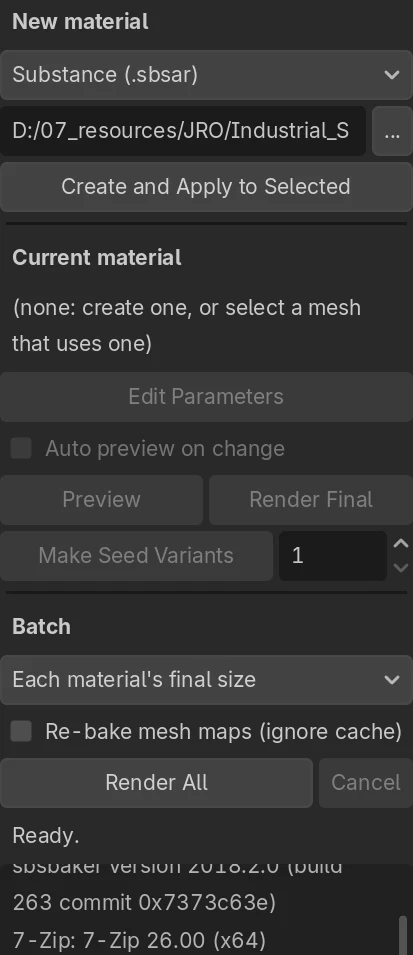
Quick start
- Select one or more
MeshInstance3Dnodes in your scene. They need clean, non-overlapping UVs (UV0). - Choose a source in the dock: Substance (.sbsar) plus a file (type a path, click ..., or pick one from your library with Library), or Noise Lab (native) plus a noise.
- Click Create and Apply to Selected. The bridge makes a settings resource, renders a 512 px preview, builds a material and puts it in each selected mesh's Material Override (one undoable action).
- Edit the parameters in the Inspector, which opens on the new material's settings. The preview re-renders shortly after each change.
- Click Render Final to render the same settings at full size (2K by default).
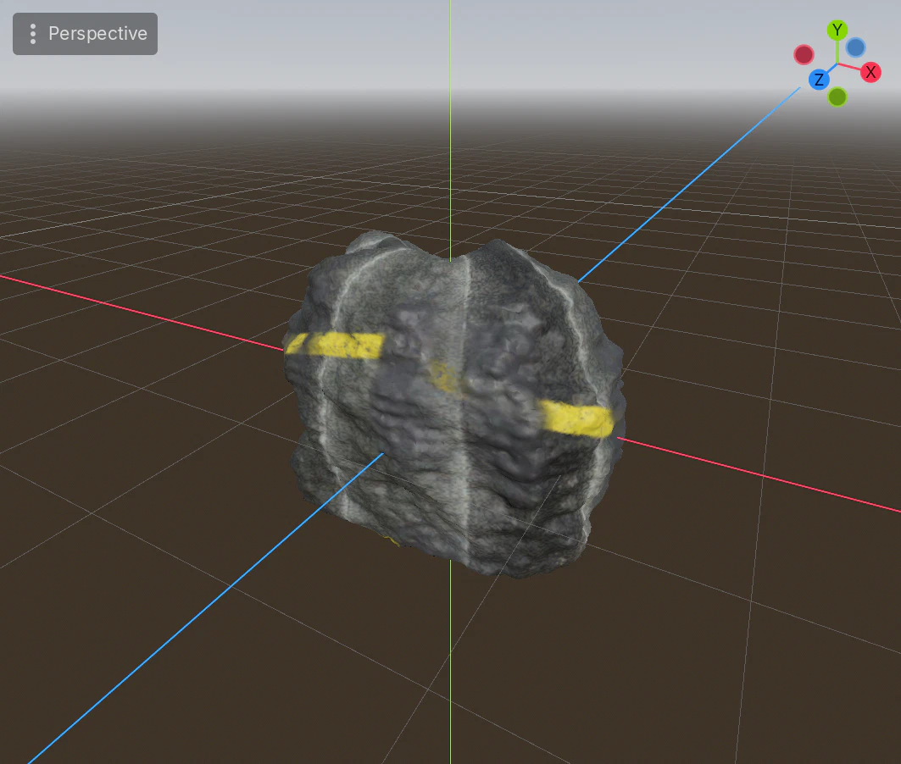
tarmac.sbsar at its default settings.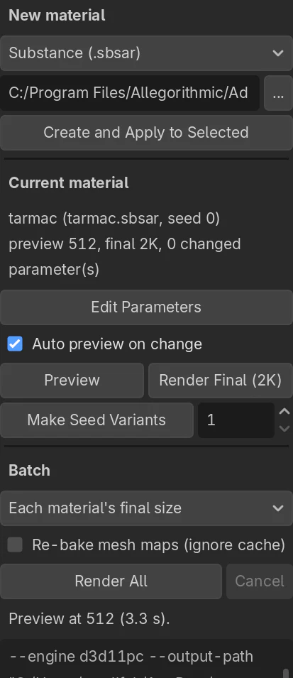
.sbsar and seed, its sizes and how many parameters you've changed.Any later change to the same material updates its textures and .tres in place, so every mesh and scene that uses it picks up the change.
Substance library
The Substance tab at the top of the editor, next to 2D, 3D, Script and AssetLib, is a library of the .sbsar files you keep outside your projects. Files stay where they are: a material made from the library references the .sbsar in place, so only the rendered maps it produces end up in the project.
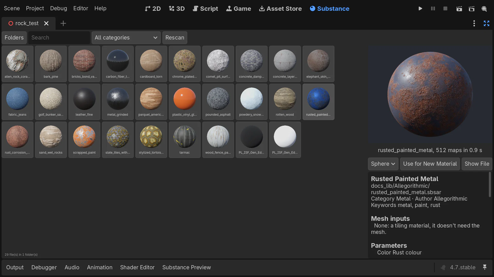
- Add a folder. Use Folders > Add Folder.... Folders are scanned with their subfolders, and each subfolder becomes a category. They're saved in Editor Settings, so every project sees the same library. Click a folder in the same menu to remove it.
- Browse. Each file gets a sphere thumbnail, rendered once in the background. Search matches the file name, folder, and the graph's own category and keywords; the dropdown filters by folder.
- Select a file for a large preview at 512 px. Drag to orbit, use the wheel to zoom, double-click to reset; switch between sphere, cube and plane.
- Use for New Material (or double-click a tile) puts the file's path in the dock and returns to the 3D view. Select your meshes and click Create and Apply to Selected as usual.
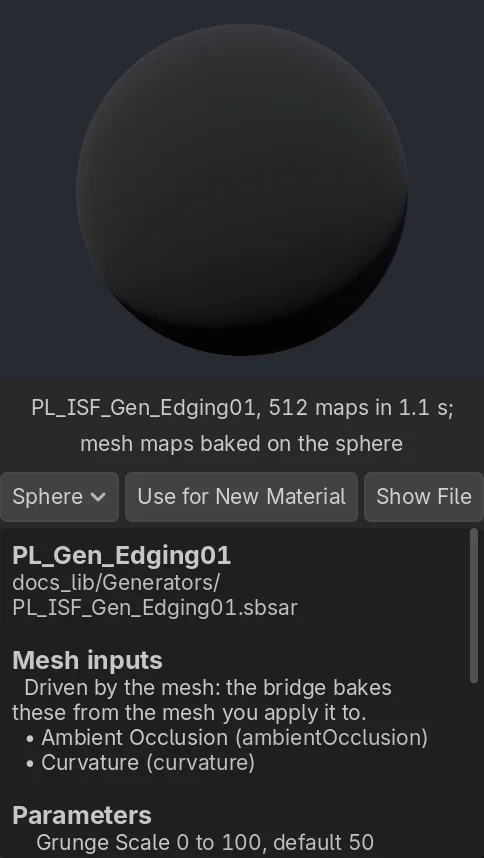
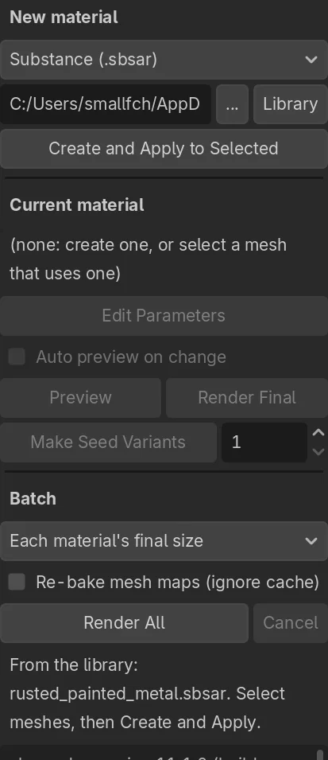
What the details show
- Graph metadata when the file has it: label, category, author (linked), physical size, keywords and description.
- Mesh inputs: whether the graph is driven by the mesh, and which maps (AO, curvature, ...) the bridge will bake for it. Tiling materials say they don't need the mesh.
- Parameters by group, with their kind, range and default; and the graph's presets.
- Outputs with their usages, which decide the material slots they feed.
Thumbnails
Thumbnails are cached in a .thumbnails folder inside each library folder, named after the file plus a short hash of its path, size and modification time. Rescanning reuses them, editing an .sbsar re-renders only its thumbnail, and thumbnails of removed or changed files are deleted. A folder you can't write to (under Program Files, say) keeps its thumbnails in the editor cache instead. Each one takes under a second (maps at 256 with the CPU engine, then one frame of the sphere), so a first scan of a few hundred files runs for a few minutes in the background while the grid fills in.
Graphs whose outputs declare no usage, such as mask generators, show their first output as the albedo, here and in materials you create from them. Use Material slots to send it elsewhere. A file that can't be rendered at all keeps an empty tile; hover it to see why.
The generated Inspector
Each material has a settings resource, <name>_graph.tres. Selecting it, clicking Edit Parameters, or selecting a mesh that uses its material shows it in the Inspector. The top section holds the bridge's own settings; below it, the graph's parameters appear as if they were ordinary properties.
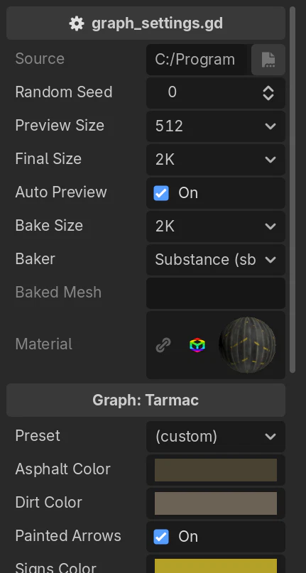
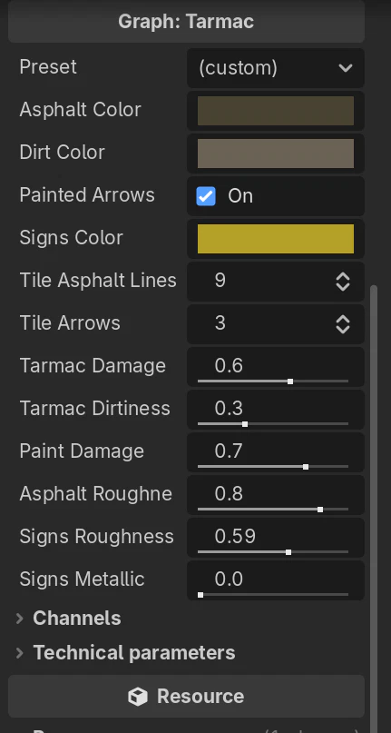
.sbsar's own description: labels, slider ranges, colour pickers, toggles and groups.In the .sbsar | In the Inspector |
|---|---|
| Slider with min, max and step | A slider with the same range; unclamped sliders also accept values beyond it |
| Colour (float3 or float4) | A colour picker (no alpha for float3) |
| Toggle button | A checkbox |
| Dropdown (combobox) | A dropdown with the graph's item names |
| Group | A collapsible group |
| Presets | A Preset dropdown at the top |
| Image inputs with mesh-map usages | Hidden: filled by the baker (see Mesh-adaptive graphs) |
Change a value and the preview follows. Here the asphalt colour is a dark red, and Tarmac Damage and Tarmac Dirtiness are raised:
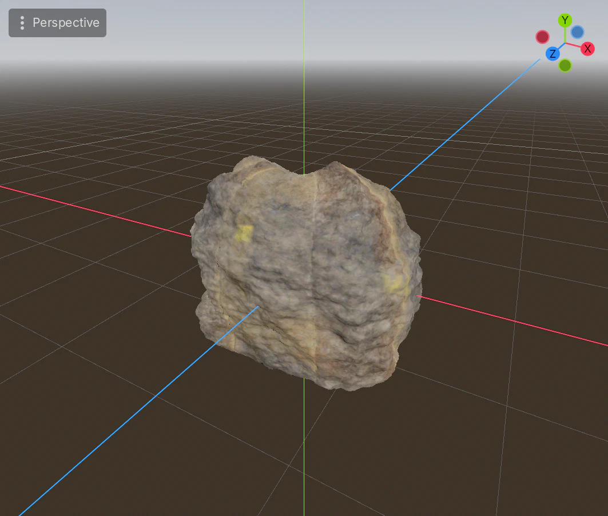
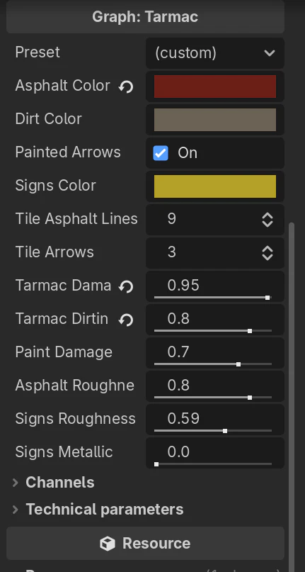
Visibility rules
Graphs can hide parameters that don't apply, with rules such as input["painted_arrows"]==true. The Inspector follows them: turn Painted Arrows off on tarmac and the paint colour, arrow tiling, paint damage and paint roughness and metallic disappear.
A rule the bridge can't evaluate shows the parameter rather than hiding it, so nothing is ever lost.
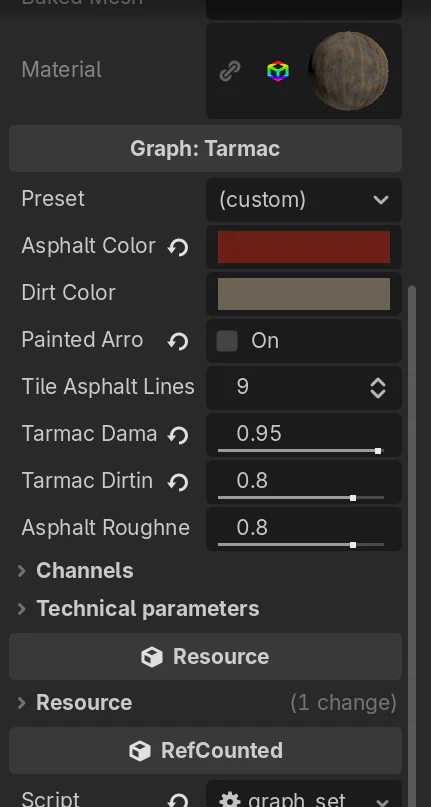
Presets and revert
- Preset applies one of the graph's built-in presets (tarmac has Dusty and Pristine), including its seed. After that, the values are yours to change.
- Revert (the arrow next to a changed value) puts that parameter back to the graph's default.
- Source is read-only: a material's folder, name and values belong to its graph. To try another
.sbsaron the same mesh, create a new material.
Previews and final renders
- Auto preview on change (on by default) updates the material live while you edit, then renders and imports the maps at the preview size 1.5 s after your last change.
- Preview renders now at the preview size (256, 512, 1K or 2K; 512 by default).
- Render Final renders at the final size (512, 1K, 2K or 4K; 2K by default). The button shows the size.
- If nothing that affects the maps has changed since the last render at that size, the render is skipped and the dock says it's up to date.
- Rendering runs off the main thread, so the editor stays responsive.
Typical times on an RTX 3080: a tarmac preview at 512 takes about 2 s from change to updated material; a final render of its 8 maps at 2K takes a few seconds more.
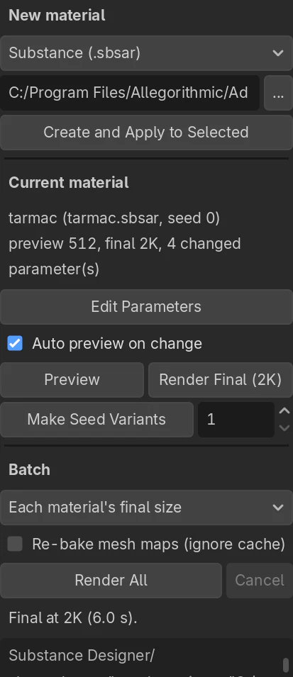
Live editing
With Auto preview on change on, every change first updates the material live: fresh maps go straight into the material in memory, with no files written and no import, so the mesh follows a slider drag. Changes made while a live update renders are merged into the next one, so a fast drag never queues up stale renders.
| Source | Live update | Typical time (RTX 3080) |
|---|---|---|
| Noise Lab | Rendered on the GPU at the preview size | about 0.15 s at 512 |
.sbsar | sbsrender at 256 with its CPU engine (it starts fastest at small sizes), PNGs loaded directly | about 0.7 s |
When you stop for 1.5 s, the normal preview render writes the maps at the preview size, imports them and puts the imported textures back on the material, so what's saved is exactly what a plain render gives. The dock's status line shows each live update and how long it took. Mesh-adaptive graphs use their cached mesh maps for live updates.
The 2D preview panel
The Substance Preview tab in the editor's bottom panel shows the current material's maps in 2D. During live editing it shows every output of the graph, including ones that aren't wired into a material slot (tarmac's Specular and Glossiness, for example), updated with each live render. Otherwise it shows the textures on the material.
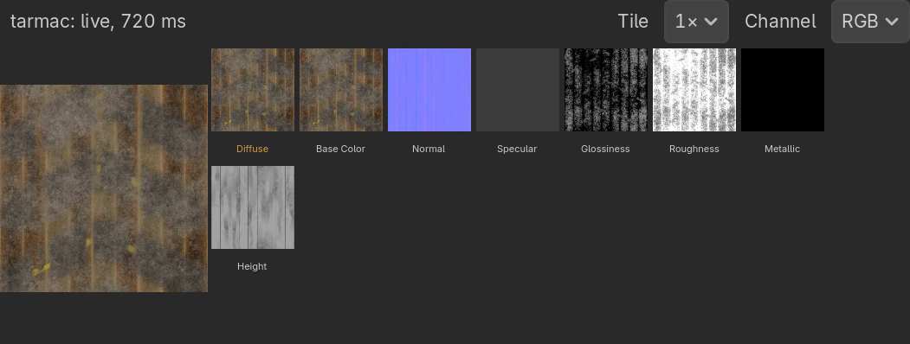
- Click a thumbnail to show it large.
- Tile (1×, 2×, 3×) repeats the map so you can check its seams.
- Channel shows RGB, or R, G, B or A alone as greyscale. One-channel maps (height, masks) always show as grey.
- Mouse wheel zooms toward the cursor; drag to pan; double-click to reset.
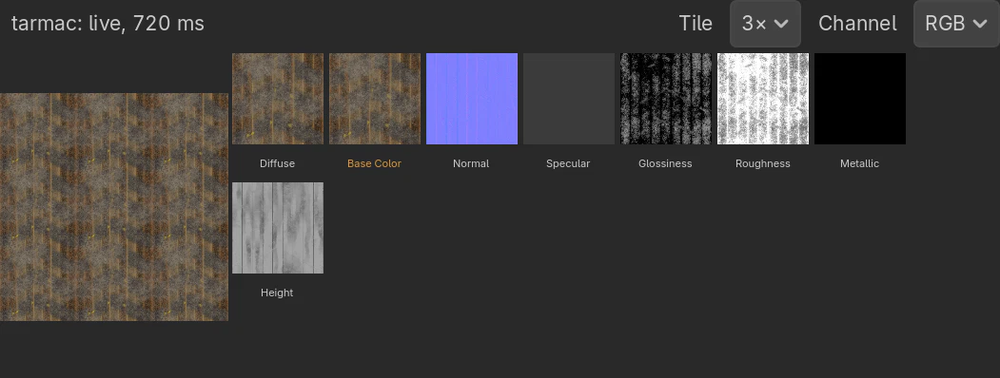
Material slots (channel routing)
By default each output goes to the material slot its usage names. The Inspector's Material Slots group, below the graph's own parameters, lets you change that per slot (Albedo, Normal, Roughness, Metallic, Ambient Occlusion, Emission, Height):
| Field | What it does |
|---|---|
| Source | Auto (by usage), None (slot off), or any output of the graph. One output can feed several slots. |
| Strength | The slot's own amount: roughness and metallic values, normal scale, AO light affect, emission energy, height (parallax) scale. For Albedo it fades the map toward white. |
| Invert | Flips the map (1 − value). |
| Min / Max | Remaps the map's 0–1 range, e.g. 0.35–1 keeps a roughness map from going fully glossy. |
Invert, Min/Max and Albedo strength are baked into that slot's texture (<name>_<slot>.png or .exr; float maps stay float). A colour output sent to a greyscale slot (roughness, metallic, AO, height) is converted to luminance. Choosing a source for Height also turns on parallax.
Routing applies to live updates too, so you see it on the mesh as you change it. Reverting every field of a slot returns it to Auto; slots that nothing feeds any more are cleared.
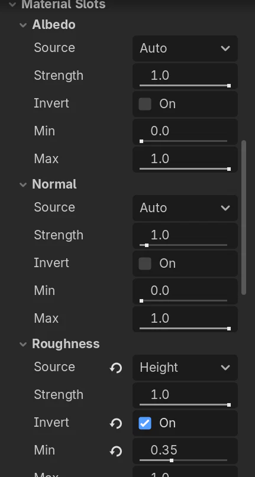
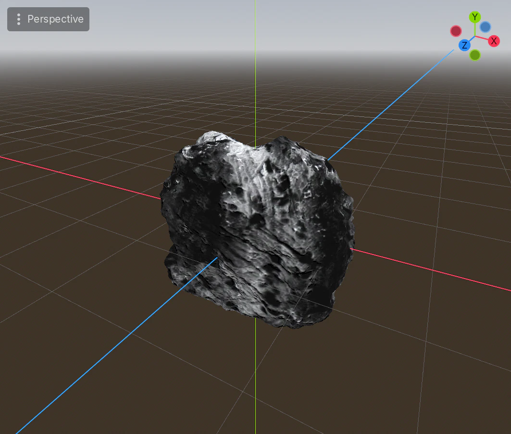
Tiling and projection
Two groups in the Inspector, above the graph's parameters, decide how the maps sit on the mesh.
Tiling
Scale sets how many times the textures repeat across the mesh's UVs (X and Y, linked by default), and Offset shifts them. Both go straight onto the material's UV scale and offset: nothing is re-rendered, and the change is saved with the material. Godot's standard material has no UV rotation, so tiling has none; a projection does.
Tiling is hidden for mesh-adaptive graphs and for projections: their maps are made for the mesh's own UV layout, and repeating them would break that.
Projection
By default the maps follow the mesh's UVs. A projection instead places them by the mesh's 3D shape, then bakes the result into its UV layout. That suits meshes with auto-generated or messy UVs: the islands can be scattered, rotated and differently sized, and the texture still runs continuously across their seams.
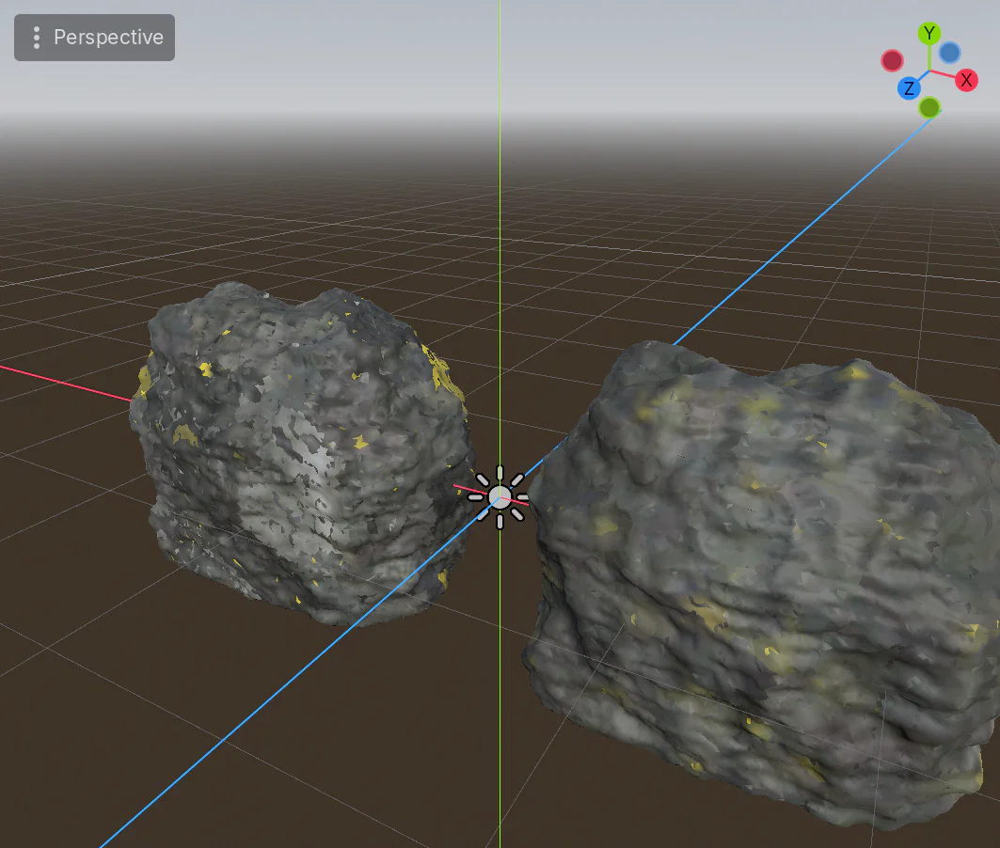
| Projection | Controls |
|---|---|
| UV | None: the mesh's own UVs (default) |
| Planar | Axis, Tile Size |
| Triplanar | Tile Size, Sharpness (soft blend up to a hard box) |
| Cylindrical | Axis, Tile Size (along), Repeats X (around) |
| Spherical | Axis, Repeats (around, pole to pole) |
Every projection also has Offset (from the centre of the mesh's bounds) and Rotation (degrees). Fit to Mesh sets the tile size to the mesh's largest dimension and re-centres it. Projections are in the mesh's own space, so they move with it.
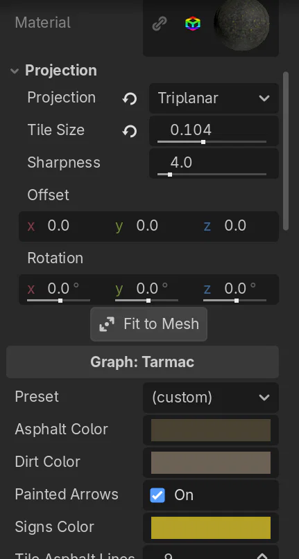
- Pick a projection in the Inspector.
- Select the mesh and press Bake from Selected Mesh in the dock (it appears once a projection is chosen). The material is now made for that mesh, like a mesh-adaptive one.
- Press Fit to Mesh, then adjust the tile size. Changes update live, like any parameter.
Every map of the render is projected in one batch on the GPU, about 0.1–0.3 s, then the empty texels around the UV islands are filled so filtering doesn't bleed. Height and other float maps stay float. Normal maps are re-oriented into the mesh's own tangent space, so they shade correctly however the UVs are laid out. The test checks this by projecting onto a flat plane, where the result must match the source exactly.
The mesh needs UVs that don't overlap, because the projection is baked into them. Any automatic unwrap will do. Projection isn't offered for mesh-adaptive graphs, whose maps already follow the mesh. Alpha isn't projected, so projected maps come out opaque.
How materials are built
By default, outputs are matched to material slots by their declared usage, never by file name (to send them elsewhere, see Material slots):
| Usage | StandardMaterial3D slot | Notes |
|---|---|---|
baseColor (or diffuse) | Albedo | Godot reads it as sRGB |
normal | Normal Map | Imported as a normal map; green flipped if the graph produced DirectX normals |
roughness | Roughness | Red channel, roughness 1.0 |
metallic | Metallic | Red channel, metallic 1.0 |
ambientOcclusion | Ambient Occlusion | Enabled, red channel |
emissive | Emission | Enabled, white multiplier |
height | Height | Assigned but left off: turn on Height in the material to use parallax |
Other outputs (specular, glossiness) are listed in the dock's log as not wired.
Normal maps. Godot expects OpenGL-style normals (Y up). When a graph has a DirectX/OpenGL switch, the bridge asks for OpenGL. When it doesn't, the map is DirectX and its green channel is flipped on import. You don't have to do anything either way.
Seed variants
Make Seed Variants copies the current material with new random seeds: same graph, same values, same mesh and sizes. Set how many with the number box. Each variant gets its own folder and name (tarmac_seed1, tarmac_seed2, …) and renders at its preview size.
If you select several meshes first, mesh 1 gets variant 1, mesh 2 gets variant 2 and so on, in one undoable action. It's a quick way to fill a scene with rocks that don't repeat.
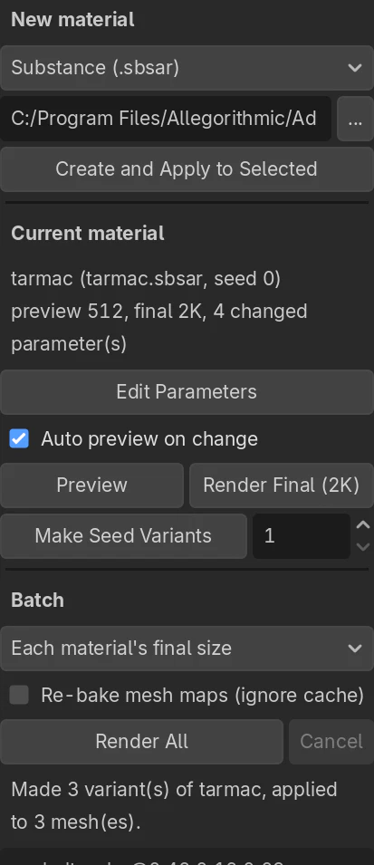
Batch rendering
Render All re-renders every material in the output folder. Choose the size:
- Each material's final size or preview size.
- A fixed 512, 1K, 2K or 4K for everything, for example 1K while testing a level and 2K for a final build.
Re-bake mesh maps (ignore cache) also throws away cached mesh maps and renders everything even if nothing changed. Use it after editing a mesh or its UVs.
Cancel stops after the material that's rendering. A material that fails is listed in the status line and the batch carries on.
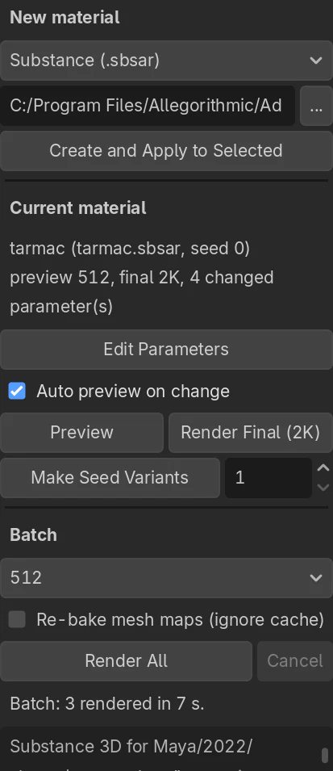
Mesh-adaptive graphs
Some Substance graphs take mesh maps as image inputs: ambient occlusion, curvature, position, world-space normal or thickness. They use them for edge wear, cavity dirt, top-down moss and similar effects. When you create a material from such a graph, the bridge does the rest:
- Reads which mesh maps the graph wants, from the usage each image input declares (
ambientOcclusion,curvature,position,normalWS,thickness). - Writes the first selected mesh out as an OBJ: the exact mesh and UVs Godot renders, so meshes from FBX, glTF or code all work.
- Bakes those maps at the bake size (2K by default), running the bakers in parallel. AO and curvature at 2K take about 4 s with
sbsbaker. - Plugs each map into its input and renders. Bakes are cached per mesh and size, so previews and parameter changes never re-bake.
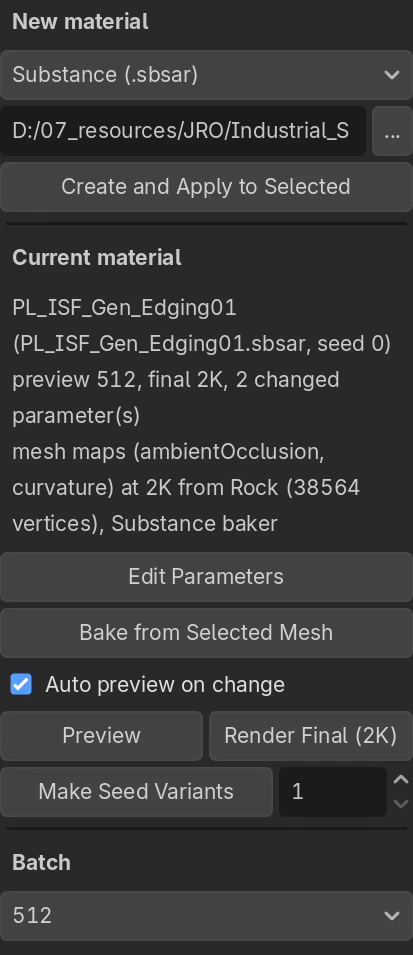
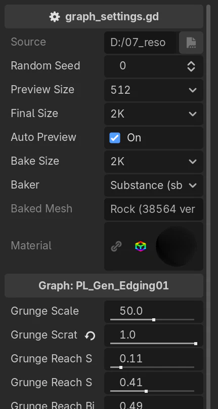
- Bake from Selected Mesh points the current material at another mesh, bakes its maps and applies the material to it.
- Changing Bake Size re-bakes at the new size once; the old bakes stay cached.
- A mesh-adaptive graph without a mesh tells you to select one and press Bake from Selected Mesh, rather than rendering something wrong.
Pick graphs that suit the shape. The bake is only half of it. JRO's PL_ISF_Gen_Edging01, used in these tests, looks for hard edges, so on a soft, rounded rock its mask stays almost black. A graph built around organic AO and curvature (for example one using Designer's mg_dirt or mg_edge_wear with its mesh inputs exposed) gives wear and dirt that follow the rock's shape.
Native baker
Set a material's Baker to Native (Godot) and its AO, curvature, position and world-normal maps are baked inside Godot instead of by sbsbaker. That removes the dependency on Adobe's tools for mesh maps. Thickness still uses sbsbaker.
How it works:
- The mesh is drawn into its own UV layout, so each texel knows its position and normal on the mesh.
- Curvature comes from how fast the normal changes compared with the position.
- AO renders the mesh from 64 directions into depth maps, then checks each texel against every depth map facing it.
- A last pass fills the gutter around UV islands so seams don't bleed.
All four maps at 2K take about 5 s.
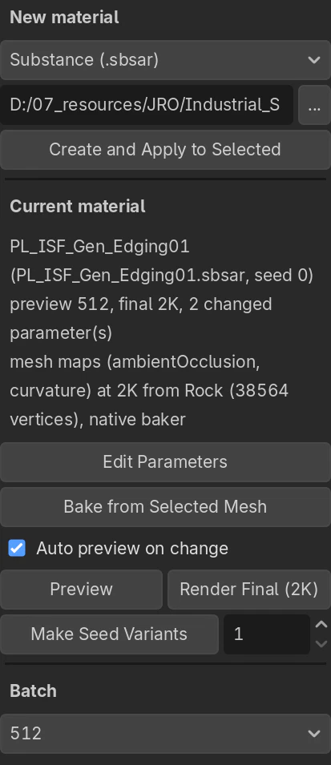
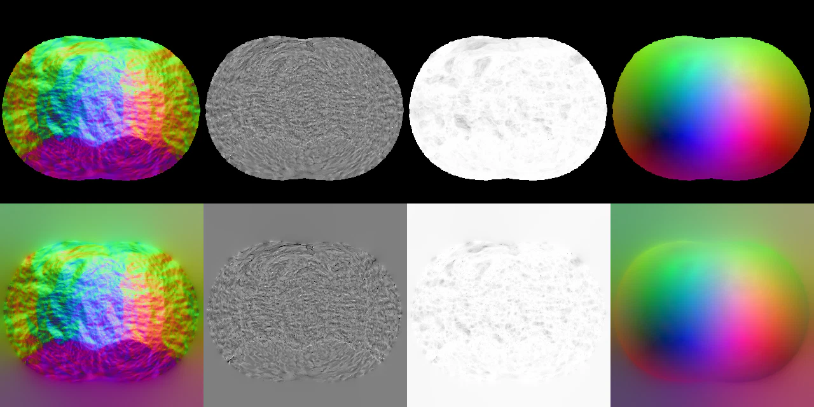
sbsbaker (bottom) on the test rock at 2K: world normal, curvature, AO and position. The bottom row fills the whole gutter; the native baker fills 16 px around each island.| Map | Correlation with sbsbaker | Mean difference |
|---|---|---|
| World normal | 1.000 | 0.5/255 |
| Position | 1.000 | 10.8/255 (range normalised differently) |
| Curvature | 0.90 | 5.1/255 |
| Ambient occlusion | 0.76 | 3.7/255 |
The curvature strength and AO occluder distance were calibrated on one rock. Hard-surface meshes may need different values. The native baker draws through the editor window, so keep the editor visible while it bakes; minimised, it times out after 2 minutes with a message saying so.
Noise Lab
Set the dock's source to Noise Lab (native) and pick a noise: Grunge Maps 001–015, or standalone noises such as dirt_1–dirt_5, moisture_noise, fluid, cells_1–cells_4, perlin_noise and the fur, fibre and directional noises. These are Godot rebuilds of Substance Designer's noises, so they render on your GPU inside the editor, about 0.5 s at 512, and fast enough to edit live.
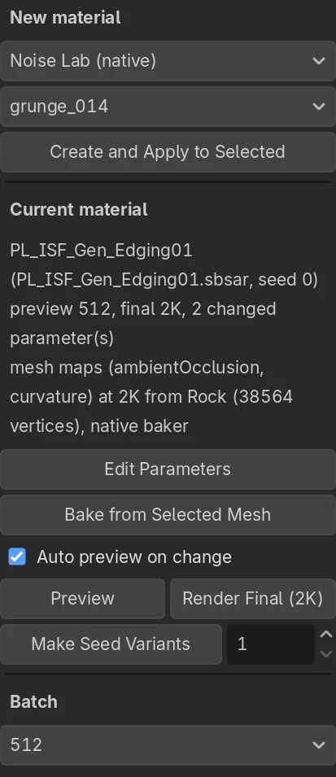
grunge_014.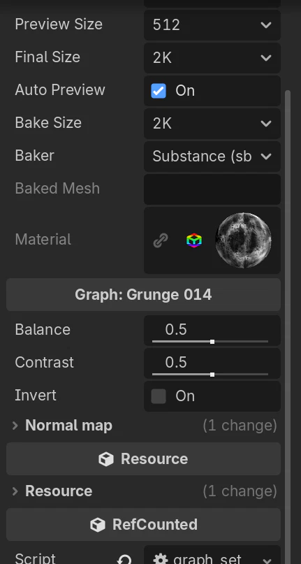
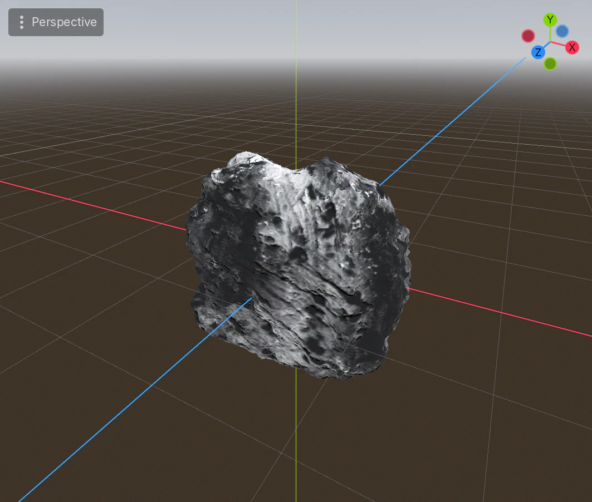
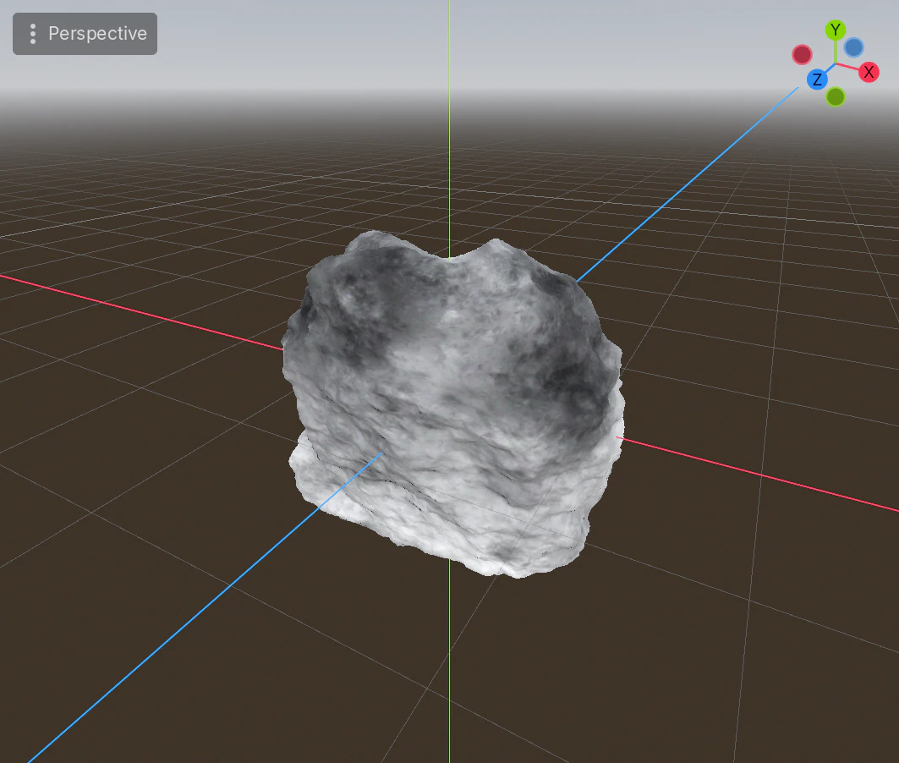
Each noise renders three maps: a greyscale albedo, a full-precision height (EXR) and a normal map made from the height. Previews, variants, batch rendering and the material builder work exactly as for .sbsar files. Standalone noises get scale and disorder plus their own settings (angle, warp intensity, edge width and so on).
Because the noise lab renders inside Godot, its live updates are the fastest: about 0.15 s at 512, several per second while you drag. Its height map is a good source for other slots: see Material slots.
Like the native baker, the noise lab renders through the editor window: keep the editor visible while a noise renders. The noise lab's code is private; see its README before sharing anything made with it.
Where files go
res://substance_bridge/ output folder (project setting)
tarmac/
tarmac_graph.tres settings: source + changed values (tracked in git)
tarmac.tres the StandardMaterial3D (generated)
tarmac_baseColor.png … one texture per usage (generated)
tarmac_seed1/ … each variant has its own folder
user://substance_bridge/ per-machine cache
xml/ metadata extracted from .sbsar files
renders/ raw tool output before import
meshes/ meshes exported for baking (.obj, plus .res for the native baker)
bakes/ mesh maps, per mesh, size and baker
library/ library preview and thumbnail maps
<your library folder>/.thumbnails/ library thumbnails (one PNG per file)The settings files are the source of truth: everything else is regenerated from them. In this project's git setup the _graph.tres files are tracked and the textures and materials are ignored. After a fresh clone, run Render All to rebuild them. Mesh-adaptive materials also need Bake from Selected Mesh once, because the baked meshes live in the per-machine cache.
Settings reference
Editor settings (per machine)
| Setting | Default |
|---|---|
substance_bridge/tools/sbsrender_path | Designer's sbsrender.exe |
substance_bridge/tools/sbsbaker_path | Automation Toolkit's sbsbaker.exe |
substance_bridge/tools/7zip_path | C:/Program Files/7-Zip/7z.exe |
substance_bridge/render/engine | d3d11pc (GPU); sse2 is the CPU engine |
substance_bridge/library/folders | Empty; the library folders, edited from the Substance tab |
Project setting
| Setting | Default |
|---|---|
substance_bridge/output_folder | res://substance_bridge |
Per-material settings (Inspector)
| Setting | Values |
|---|---|
| Random Seed | Any integer |
| Preview Size | 256, 512 (default), 1K, 2K |
| Final Size | 512, 1K, 2K (default), 4K |
| Auto Preview | On (default) or off |
| Bake Size | 1K, 2K (default), 4K (mesh-adaptive graphs) |
| Baker | Substance (default) or Native |
| Material Slots | Per slot: Source (Auto, None or an output), Strength, Invert, Min, Max (see Material slots) |
| Tiling | Scale (default 1, 1), Offset; on the material, no render (see Tiling) |
| Projection | UV (default), Planar, Triplanar, Cylindrical, Spherical, with Axis, Tile Size, Repeats, Sharpness, Offset, Rotation (see Projection) |
Troubleshooting
| You see | What to do |
|---|---|
| "Missing tools: …" in the dock | Fix the path in Editor Settings > Substance Bridge. The dock's log lists the versions it found. |
| "Select one or more MeshInstance3D nodes first." | Create needs at least one selected MeshInstance3D. |
| "This graph takes mesh maps (…)" | Select the mesh and press Bake from Selected Mesh. |
| "… did not finish … keep the editor visible" | The Noise Lab and the native baker render through the editor window. Restore the window and try again. |
| "The noise lab is not linked into this project" | Create the noiselab junction (see Setup). |
| Render failed with an image-input warning | A baked map or image file couldn't be loaded. sbsrender exits 0 in that case, so the bridge reads its warnings and reports the failure for you. |
| The dock stops updating after you edit the plugin's scripts | Godot reloaded the scripts in place. Untick and re-tick the plugin, or restart the editor. |
| A library tile has no thumbnail | Hover the tile: its tooltip says why the render failed. Rescan retries files that have changed since. |
| Mesh maps look wrong or blotchy | Check the mesh's UVs: they must be clean, non-overlapping and inside 0–1. |
Every command line the plugin runs, with measured timings and the tool behaviours it guards against, is in validated-commands.md.
Tests
Run from the project folder with the Godot 4.7 console executable:
godot --headless --path . --script res://addons/substance_bridge/tests/runner_check.gd
godot --headless --path . --script res://addons/substance_bridge/tests/backend_check.gd
godot --headless --path . --script res://addons/substance_bridge/tests/obj_check.gd
godot --headless --path . --script res://addons/substance_bridge/tests/bake_check.gd
godot --headless --path . --script res://addons/substance_bridge/tests/routing_check.gd
godot --path . --script res://addons/substance_bridge/tests/native_bake_check.gdThe editor self-test drives the dock end to end: create, Inspector, previews, variants, batch, mesh-adaptive baking with both bakers, and the Noise Lab. Set SUBSTANCE_BRIDGE_SELFTEST to tarmac.sbsar, optionally SUBSTANCE_BRIDGE_SELFTEST_MESH and SUBSTANCE_BRIDGE_SELFTEST_NOISE, then run the editor with --log-file. Run it windowed on a copy of the project. Projection and tiling have tests/projection_test.gd: set SUBSTANCE_BRIDGE_PROJECTION to tarmac.sbsar. It checks the plane identity for colour and normal maps, every projection on a box and a sphere, and the whole flow in the dock (it removes the material it makes). The library has its own editor test, tests/library_test.gd: set SUBSTANCE_BRIDGE_LIBRARY to a scratch folder of .sbsar files (with subfolders, including tarmac.sbsar and a mesh-driven graph) and run the editor. It points the library at that folder for the run and restores your folders afterwards. The screenshots on this page come from tests/tour.gd, run the same way with SUBSTANCE_BRIDGE_TOUR set to an output folder (add SUBSTANCE_BRIDGE_TOUR_LIBRARY for the library shots only).